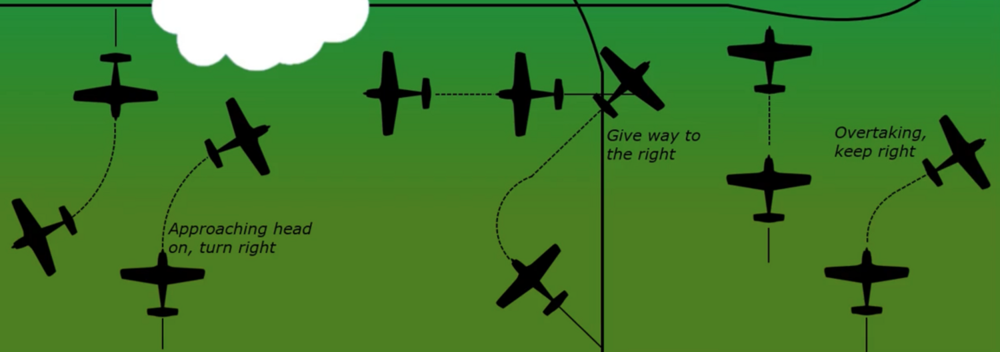
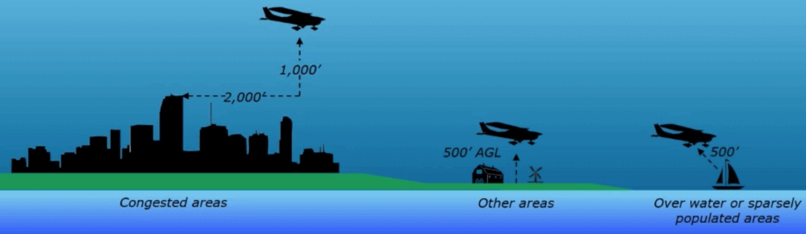
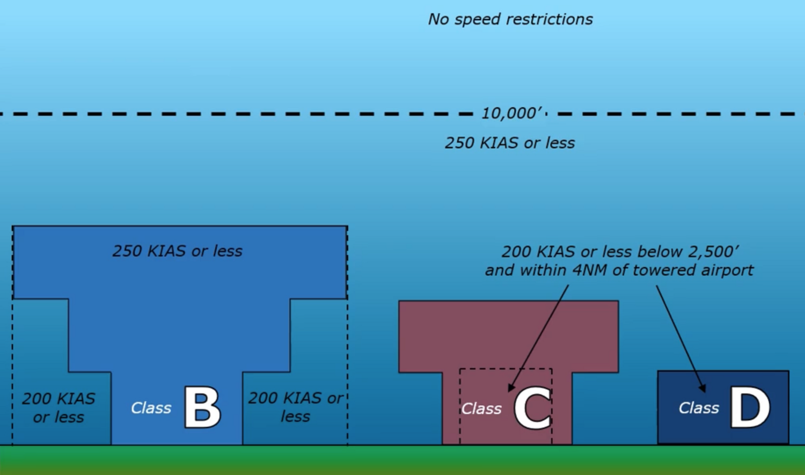

Regulations
Documents & required equipment
- A — Airworthiness certificate (no expiration)
- R — Registration certificate
- R — Radio station license (international only — not needed for US domestic)
- O — Operating limitations (POH, placards, markings)
- W — Weight & balance data
Of the ARROW documents, only the Airworthiness certificate must be displayed (visible to passengers/crew). The rest just have to be aboard.
Required for day VFR:
- A — Airspeed indicator
- T — Tachometer
- O — Oil pressure gauge
- M — Manifold pressure (as required)
- A — Altimeter
- T — Temperature gauge (liquid-cooled)
- O — Oil temperature gauge
- F — Fuel gauge
- L — Landing gear position (if retractable)
- A — Anti-collision lights
- M — Magnetic compass
- E — ELT
- S — Safety belts
Night VFR adds these:
- F — Fuses (spare set)
- L — Landing light
- A — Anti-collision lights
- P — Position (navigation) lights
- S — Source of electrical power
- N — NOTAMs (NOTAM (D) carry runway condition & status)
- W — Weather (reports & forecasts)
- K — Known ATC delays
- R — Runway lengths
- A — Alternates
- F — Fuel requirements
- T — Takeoff & landing distances
Right-of-way & minimum altitudes

- Least maneuverable has priority: balloons > gliders > airships > airplanes.
- An aircraft in distress always has the right of way, and a towing aircraft outranks a plain airplane.
- Aircraft on final approach or landing have the right of way over aircraft in flight or on the surface.
- When two aircraft are approaching to land, the one at the lower altitude has the right of way — but must not cut in front of or overtake an aircraft on final.

VFR cruising altitudes
Above 3,000′ AGL, pick your altitude by magnetic course:
Speed limits

VFR fuel reserves
Day
Enough to reach the destination + 30 minutes at normal cruise.
Night
Enough to reach the destination + 45 minutes at normal cruise.
Inspections & maintenance
| Item | Interval |
|---|---|
| Annual inspection (all aircraft) | Every 12 calendar months |
| 100-hour inspection | Every 100 hours — required for aircraft for hire (commercial / instruction) |
| Transponder | Every 24 calendar months |
| ELT inspection | Every 12 calendar months |
The ELT transmits on 121.5 and 243.0 MHz. Replace the battery after 1 cumulative hour of use or at 50% of useful life. Tests may be done only during the first 5 minutes after the hour.
If a repair or alteration substantially affects the aircraft's operation in flight, it must be test-flown by an appropriately-rated pilot and approved for return to service before it's operated with passengers aboard.
Pilot currency & medical
- Flight review every 24 calendar months.
- To carry passengers: 3 takeoffs & landings in the previous 90 days (same category/class). At night, those 3 must be to a full stop.
- Type rating required for aircraft over 12,500 lbs (and turbojets).
| Medical | Validity |
|---|---|
| 3rd class — under 40 | 5 years |
| 3rd class — 40 and over | 2 years |
| BasicMed | Physician exam every 4 years; online course every 2 years |
Present your pilot & medical certificate (and photo ID) on request from the FAA Administrator, the NTSB, or any law enforcement officer.
Keep a copy of the BasicMed certificate in your logbook.
BasicMed vs. 3rd-class medical
| Limitation / feature | BasicMed | 3rd-class medical (standard PPL) |
|---|---|---|
| Max passengers | 6 passengers | No restriction |
| Max takeoff weight | 12,500 lbs | No restriction |
| Max altitude | 18,000 ft MSL (below Class A) | No restriction |
| Max speed | 250 KIAS | No restriction |
"Night" for currency is 1 hour after sunset to 1 hour before sunrise; position lights are required sunset to sunrise.
Turn exterior lights on in reduced visibility — what matters is the visibility, not whether the field is towered. It's also recommended any time you're operating below 10,000 ft.
Red = its left wing, green = its right wing, white = its tail. So a steady white + flashing red means you're looking at its tail; a steady red means you're seeing its left side.
Training endorsements
Beyond the type rating (over 12,500 lb / turbojets), some airplanes need a one-time logbook endorsement after training:
| Endorsement | When it's required |
|---|---|
| High-performance | Engine of more than 200 hp |
| Complex | Retractable gear + flaps + a controllable-pitch prop |
| High-altitude | Pressurized, with a service ceiling / max operating altitude above 25,000 ft MSL |
| Tailwheel | Any tailwheel (conventional-gear) airplane |
Alcohol & aerobatic limits
- Alcohol: no flying within 8 hours of drinking or with a BAC of 0.04 or higher.
- Parachutes: required when intentionally exceeding 30° of pitch or 60° of bank with passengers aboard — and any approved parachute carried must have been repacked within the preceding 180 days by a certificated rigger.
- NTSB: notify immediately of an accident or certain serious incidents — including a required crewmember unable to perform normal flight duties from injury or illness; file the written report within 10 days.
Emergency authority & reporting
In an emergency the PIC has broad authority to deviate as needed. What differs afterward is who you report to, how fast, and whether a written report is required.
| Scenario | Agency | Immediate action | Written report |
|---|---|---|---|
| Aircraft accident | NTSB | Notify immediately | Within 10 days |
| Overdue / missing aircraft | NTSB | Notify immediately | Within 7 days |
| Serious incidents * | NTSB | Notify immediately | Only if requested |
| Emergency deviation (FARs) | FAA | None | Only if requested |
| Emergency (ATC priority) | ATC | Notify via radio ASAP | Within 48 hrs (if requested) |
The written exam frequently tests which incidents require immediate NTSB notification even when they aren't "accidents." Memorize these four:
- Flight control system malfunction or failure.
- Inability of a required crewmember to perform duties (illness or injury).
- In-flight fire.
- Aircraft collision in flight.
Categories & classes
"Category" and "class" flip roles between the aircraft and the airman — a classic test trap:
| Category (broadest) | Class (sub-group) | |
|---|---|---|
| Aircraft (the metal) | Mission: Normal, Utility, Acrobatic | Machine: Airplane, Rotorcraft |
| Airmen (the pilot) | Machine: Airplane, Rotorcraft | Specs: Single-Engine Land, Helicopter |
Aircraft Class = Airmen Category — the same broad words (Airplane, Rotorcraft) sit one rung apart on each side.
Advisory Circulars (ACs) are non-binding guidance (not regulatory).